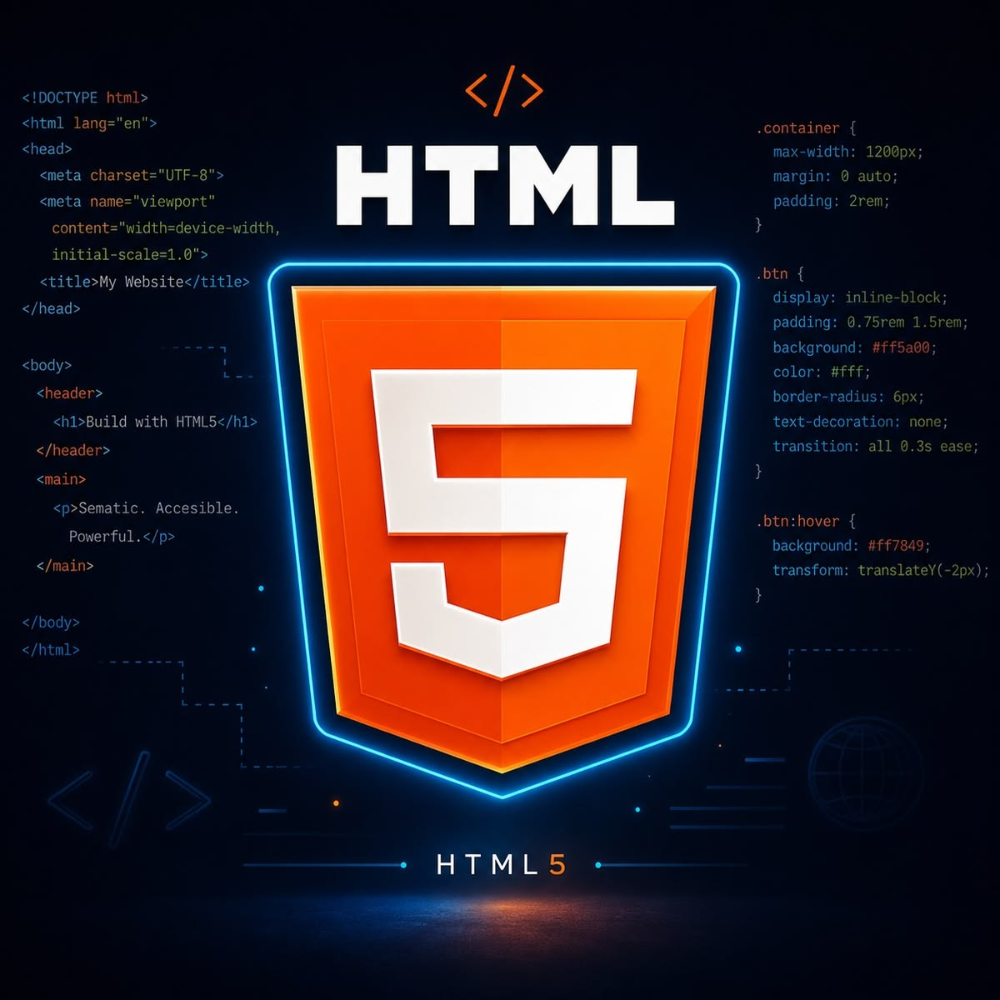
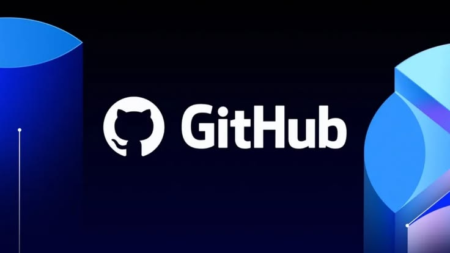
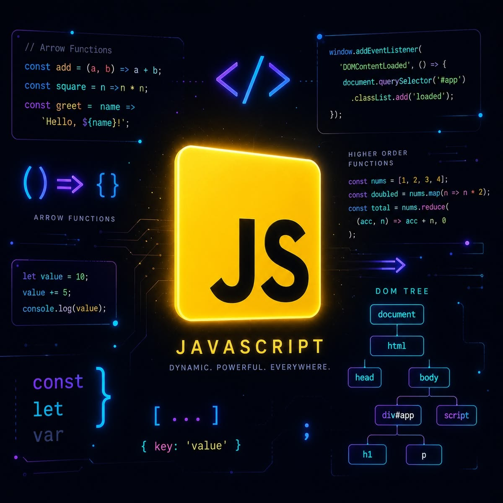
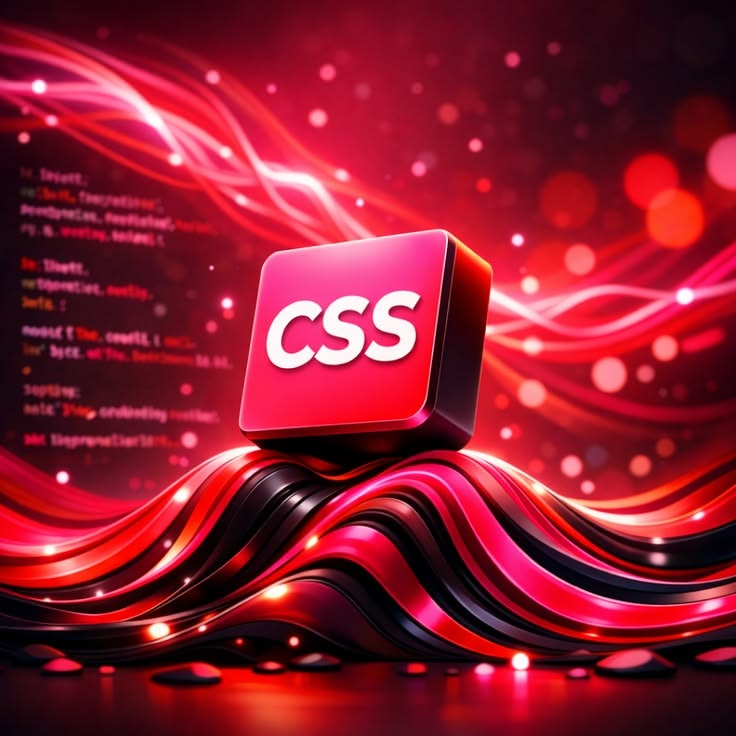

Mon Portfolio .
À propos de moi Je suis une personne passionnée par le monde du numérique et du développement web. Curieux, motivé et toujours désireux d'apprendre, j'aime créer des sites web modernes, attractifs et faciles à utiliser. Je cherche constamment à améliorer mes compétences, à relever de nouveaux défis et à transformer mes idées en projets concrets. Mon objectif est de continuer à évoluer dans le domaine du développement web et de mettre ma créativité au service de projets innovants.

HTML est un langage de balisage qui permet de structurer le contenu des pages web en organisant les éléments d'un site.

GitHub est une plateforme qui permet de gérer, sauvegarder et partager des projets de développement web tout en facilitant le travail collaboratif.

JavaScript est un langage de programmation qui permet de rendre les pages web interactives et dynamiques en ajoutant des fonctionnalités.

CSS est un langage de style qui permet de personnaliser l'apparence des pages web en ajoutant des couleurs, des animations, des mises en page.